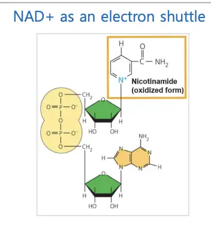

‹ 홈으로CHAPTER 7. Cellular respiration and fermentationLIFE103
Concept 1: Catabolic pathways yield energy by oxidizing organic fuels
Catabolic pathways and production of ATP
- catabolic pathway : 전자 이동이 포함, 세포 호흡의 핵심 과정
- Fermentation(발효) : 산소 없이 당(sugar)을 부분적으로 분해하는 과정
- aerobic respiration(호기성 호흡) : 유기분자와 산소를 소비하여 ATP를 생성
- anaerobic respiration(혐기성 호흡) : 호기성 호흡과 비슷하지만, 산소 대신 다른 화합물을 소비
Stepwise energy harvest via NAD+ and the electron transport chain
- NADH(reduced form, 환원형) : 전자 전달계(ETC)에 전자를 전달하는 역할
- → 전자가 일련의 산화환원반응을 거치며 전자음성도가 높은 운반체 분자들에게 차례로 전달
- → 여러 단계의 에너지를 방출하는 단계적인 반응 ⇒ 방출된 에너지 : ATP 새성

- NAD+ : 전자 운반체
Concept 2: Glycolysis harvests chemical energy by oxidizing glucose to pyruvate
The three stages of cellular respiration
- 1. Glycolysis(해당과정)
- 포도당 → pyruvate(피루브산) 2 분자 (세포질에서 발생)
- 2. 시트르산 회로(Citric Acid Cycle) \{+ pyruvate oxidation(피루브산 산화)\}
- \{NAD+가 하이 에너지 H를 가져감\} + NADH 2 분자 (미토콘드리아 기질)
- 3. 전자 전달계(ETC)
- Oxidaive phosphorylation(산화적 인산화)
- 전자전달계에서 ATP 합성 [미토콘드리아 내막]
Substrate-level phosphorylation vs. oxidative phosphorylation
- (1) substrate-level phosphorylation
- 기질 수준의 인산화
- 기질로부터 인산기를 떼어내 ADP에 붙임
- 효소가 직접 ADP + phosphate
- 포도당 1개 → 4개의 ATP
- Glycolysis(해당과정), Citric acid cycle(시트르산 회로) 과정에 이용
- (2) oxidative phosphorlation
- 산화환원반응이 일어나는 인산화
- 전자전달계 ⇒ ATP 합성 효소를 꺠워서 ADP + phosphate
- 클루코스 1 분자 → 28개의 분자가 만들어짐 (효율이 좋음)
- 화학삼투적 인산화(chemiosmosis)
Concept 3: The citric acid cycle completes the energy-yielding oxidation of organic molecules
Ptruvate oxidation(피루브산 산화)
- 해당과정 → 피루브산 2개 → 미토콘드리아 내로 들어감
- 피루브산이 CO2 1분자 방출 → 아세틸기로 변함
- 아세틸기 + Coenzyme A 결합 ⇒ Acetyl-CoA
- ⇒ NAD+가 전자와 수소를 받아 NADH로 환원됨.
- == 2 NADH 생성
Citric acid cycle(키르브산 회로, Krebs cycle)
- Acetly-CoA + 4탄소 화합물 → 시트르산(citrate) 형성
- 시트르산 → 4탄소 화합물로 돌아옴 → CO2 2개 방출
- 이때, 전자 → NAD+로 전달 ⇒ NADH 3개, FADH2 1개 + ATP 1개 생성
- ⇒ 이 과정이 2회 반복됨
- == 글루코스 1개 ⇒ 2 ATP, 6 NADH, and 2 FADH2
Concept 4: Chemiosmosis couples electron transport to ATP synthesis
Electron transport chain(ETS, 전자전달계)
- 해당과정(Glycolysis), 시트르산 회로(citric acid cycle)
- → (2 ATP, 2 NADH) + (2 NADH) + (6 NADH, 2 FADH2, 2 ATP)
- = 4 ATP, 10 NADH, 2 FADH2
- → 모두 미토콘드리아 내막(inner membrane)에 있는 전자전달계로 이동
- ⇒ H+ 이온을 inner membrane 경계를 넘겨 이동하는 데에 이용됨.
- → H+ 이온의 potential energy를 높이는 데에 이용
- free-energy change during electron transport
- 전자전달계(ETC)를 따라 전자가 이동할 때마다, 각 단계에서 자유에너지(free energt)가 조금씩 줄어듬 → 이때 방출되는 에너지
- → 미토콘드리아 기질(matrix) 바깥(intermembrance space)으로 펌핑하는 데 쓰임.
- O2 = final electron accepter : 마지막 전자와 결합하여 H20를 만듦
- Chemiosmosis: the energy-coupling mechanism
- 화학삼투적 인산화(chemiosmosis)
- ATP 합성 효소에 4 H+가 들어오면서 ADP + P → PTP 합성됨.
- Chemiosmosis couples the electron transport chain to ATP synthesis
- NADH → 4 + 4 + 2 = 10 H+가 밖으로 이동
- FADH2 → 4+ 2 = 6H+가 밖으로 이동
- ⇒ 10 * 10 + 6 * 2 = 112 H+가 밖으로 이동
- ⇒ ATP는 총 112/4 = 28개 생성
Concept 5: Fermentation and anaerobic respiration enable cells to produce ATP without the use of O2
Anaerobic respiration and fermentation
- 무산소 호흡(Anaerobic respiration)
- 전자전달계를 통해 ATP를 생성하는 점 → 산소 호흡과 비슷함
- 최종 전자 수용체가 O2가 아닌 다른 물질임 e.g. 황산염, 질산염, 아산화탄소
- 발효 (fermentation)
- ATP를 만드는 유일한 과정 = glycolysis(해당과정)
- → NAD+를 재생해야 함. ⇒ NADH의 전자를 피루브산이나 유도체에 전달하여 NAD+를 재생
- Alcohol fermentaion
- 피루브산 → 아세트알데하이드 → 에탄올
- ⇒ CO2 방출, NAD+가 재생
- e.g. 알코올 → 알코올 음료, CO2 → 빵
- Lactic acid fermentation
- 피루브산 → 젖산 (lactate)
- ⇒ CO2 방출 X, NAD+는 재생
- e.g. 사람의 근육 세포. 운동 시 근육세포 → 젖산발효
- 미생물 → 치즈 요거트 등